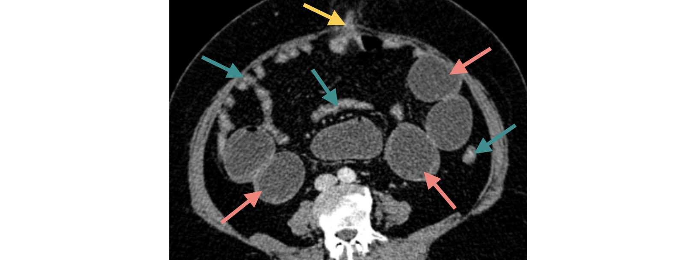
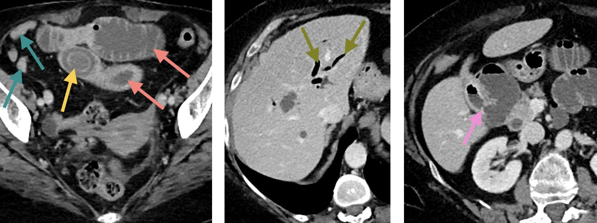

Syndrome occlusif
Fonctionnel 
- Scanner abdomino-pelvien au temps veineux et reconstruction volumique
- Dilatation diffuse des anses intestinales (pas de jonction plat-dilaté)

 Causes nombreuses : opioïdes, hypokaliémie, péritonite, post-laparotomie, ...
Causes nombreuses : opioïdes, hypokaliémie, péritonite, post-laparotomie, ...
Mécanique 
Occlusion mécanique = jonction intestin plat / intestin dilaté
- Scanner abdomino-pelvien injecté au temps veineux
- Dilatation marquée d'anses grêles contrastant avec un côlon plat
- Syndrome jonctionnel dans le pelvis avec anse grêle plate en aval
- Rehaussement satisfaisant des parois des anses grêles dilatées

Bride = 80% des occlusions gréliques (antécédent chirurgical +++)
- Scanner abdomino-pelvien injecté au temps veineux
- Dilatation d'anses grêles en amont d'une hernie ombilicale
- En aval les anses intestinales sont plates

80% des occlusions mécaniques sont gréliques
- Scanner abdomino-pelvien injecté au temps veineux
- Dilatation du côlon en amont d'un épaississement sténosant du côlon gauche
- Adénopathies dans le mésocôlon et métastase hépatique nécrotique

Cancer = 60% des occlusions mécaniques coliques
- Scanner après ingestion et administration intrarectale de produit de contraste
- Opacification de la lumière des anses grêles et du rectum
- Pas de passage du produit de contraste dans le côlon
- Dilatation très marquée du sigmoïde et cadre colique modérément dilaté
- Enroulement du sigmoïde et du mésentère

Aspect en grain de café sur l'ASP (ou ici le topogramme)
Quiz
Femme de 70 ans, douleurs abdominales, constipation
- Scanner abdomino-pelvien sans et après inj. aux temps veineux et excréteur
- Dilatation du côlon en amont d'un amas de matières fécales dans le rectum

 Fécalome
Fécalome
1ère cause d'occlusion colique chez le vieux alité : TR indispensable
Femme de 75 ans, douleurs abdominales et vomissements
- Scanner abdomino-pelvien injecté au temps veineux
- Occlusion mécanique du grêle avec jonction plat-dilaté dans le pelvis
- Formation ovalaire avec liseré hyperdense périphérique immédiatement en amont
- Aérobilie et fistule entre la vésicule biliaire et le 2ème duodénum
 Iléus biliaire
Complique rare de la cholécystite chronique
Homme de 30 ans, douleurs et distension abdominales, CRP élevée
- Scanner abdomino-pelvien injecté au temps veineux
- Dilatation grélique en amont d'un épaississement sténosant de la dernière anse iléale
 Occlusion grélique sur iléite terminale
Occlusion grélique sur iléite terminale
Causes d'iléite terminale : maladie de Crohn, tuberculose, Yersinia
Homme de 55 ans, douleurs abdominales
- Scanner abdomino-pelvien injecté au temps artériel
- Dilatation colique en amont d'une hernie inguino-scrotale gauche
 Occlusion colique sur hernie étranglée
Occlusion colique sur hernie étranglée
La hernie inguinale est beaucoup plus fréquente chez l'homme